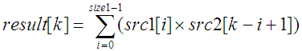
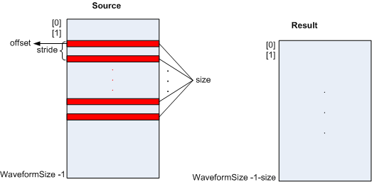
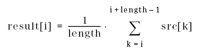
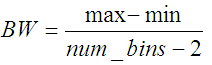
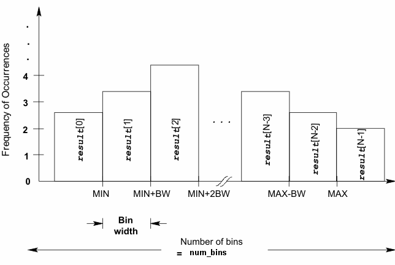
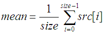
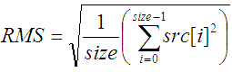
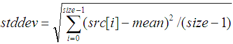

Wave
The template class "Wave" provides the complete functionality for digital signal processing including:
- the initialization methods
- basic and advanced math operations
- trigonometric functions
- bitwise operations
- operations on arrays
- resampling, windowing and moving average calculation
- A-law and μ-law encoding and decoding
- FFT, IFFT and spectrum calculation
- calculation of static converter parameters (linearity)
This class supports the data types INT, DOUBLE, FLOAT and COMPLEX. Some functions are only available for a subset of these data types.
A Wave object has the following properties:
- Waveform
This property points to an array containing the sampled waveform in the time domain, or in the frequency domain. The array type can be integer, float, double or complex.
No default values are assigned.
- Size
The integer number defining the size of the waveform. For complex waveforms, this is the number of complex values.
- Domain
The domain of the waveform data. It can be DSP::TIME for a time domain or DSP::FREQUENCY for a frequency domain. The default value after the initialization of a waveform is DSP::TIME.
- Sampling Rate
The sampling rate of the sampled waveform. The default value is -1. This means this property is not initialized.
- Number of Periods
The number of waveform periods if the waveform is periodic. If the waveform is not periodic, this value is 0.
- Unit
The unit of the waveform data. It can be:
DSP::UNIT_V: for the unit V(Volts). This unit is set automatically if the data is uploaded from a digitizer.
DSP::UNIT_1: if the data does not have a unit. This is set automatically if the data is uploaded from a digital channel (digital capture data).
DSP::UNIT_DBV, DSP::UNIT_DB, DSP::UNIT_DBM or DSP::UNIT_W: These units are set after the FFT calculation, depending on the conversion function.
- Comment
A comment for the waveform. It is displayed in the Signal Analyzer, or can be exported to a file. The length of the comment is not restricted.
- Reference Line
The reference line required for the calculation of linearity parameters. The value can be:
DSP::END_PT: The reference line connects the first and the last points.
DSP::ZERO_PT: The reference line minimizes the peak deviation.
DSP::MIN_RMS: The reference line minimizes the RMS of the deviations.
The default value is DSP::END_PT.
- Spectrum Type
The type of spectrum. The value can be:
DSP::ONE_SIDED: for one-sided spectrums
DSP::TWO_SIDED: for two-sided spectrums.
Applying the fft() or spectrum() function to non-complex Wave objects, returns one-sided spectrums.
Applying fft() function to complex Wave objects returns two-sided spectrums.
One-sided spectrums contain the frequency bins from DC to
fs*(size - 1)/(2*size). Two-sided spectrums contain the frequency bins from DC tofs, where the right half of the spectrum is a mirror image of the negative frequencies from DC to-fs/2. (fsis the sampling frequency).
This API is defined in the header file /opt/hp93000/soc/prod_com/include/MAPI/Wave.h.
Class definition
In the class definition:
Wave<T> means Wave<INT>,
Wave<DOUBLE>, Wave<FLOAT> or
Wave<COMPLEX>.
Data type T means
INT, DOUBLE, FLOAT or
COMPLEX.
Constructor
Wave(); Wave(INT size, T initValue); Wave(const ARRAY_I & array); Wave(const ARRAY_D & array); Wave(const ARRAY_F & array); Wave(const ARRAY_COMPLEX & array); Wave(const Wave<INT> & wave); Wave(const Wave<DOUBLE> & wave); Wave(const Wave<FLOAT> & wave); Wave(const Wave<COMPLEX> & wave);
Member functions
//Assignment
Wave<T> & operator=(const Wave<INT> & wave);
Wave<T> & operator=(const Wave<DOUBLE> & wave);
Wave<T> & operator=(const Wave<FLOAT> & wave);
Wave<T> & operator=(const Wave<COMPLEX> & wave);
//Initialization
Wave<T> & Wave<T>::copy(const Wave<INT> & wave);
Wave<T> & Wave<T>::copy(const Wave<DOUBLE> & wave);
Wave<T> & Wave<T>::copy(const Wave<FLOAT> & wave);
Wave<T> & Wave<T>::copy(const Wave<COMPLEX> & wave);
Wave<T> & importFile(const STRING & filePath);
Wave<T> & initRealImag(const Wave<DOUBLE> & real, const Wave<DOUBLE> & imag);
Wave<T> & initRealImag(const Wave<FLOAT> & real, const Wave<FLOAT> & imag);
Wave<T> & initMagnitudePhase(const Wave<DOUBLE> & magnitude, const Wave<DOUBLE> & phase);
Wave<T> & initMagnitudePhase(const Wave<FLOAT> & magnitude, const Wave<FLOAT> & phase);
//Access elements
T & operator[](const INT index);
const T & operator[](const INT index) const;
T getComponent(DOUBLE value) const;
T getComponent(FLOAT value) const;
Wave<T> & setComponent(DOUBLE value, T newValue);
Wave<T> & setComponent(FLOAT value, T newValue);
//Basic Math Operation
Wave<T> & operator+(T value);
Wave<T> & operator-(T value);
Wave<T> & operator*(T value);
Wave<T> & operator/(T value);
Wave<T> & operator++();
Wave<T> & operator--();
Wave<T> operator++(INT arg); //postfix
Wave<T> operator--(INT arg); //postfix
Wave<T> & operator%(INT value);
Wave<T> & operator+(const Wave<T> & wave);
Wave<T> & operator-(const Wave<T> & wave);
Wave<T> & operator*(const Wave<T> & wave);
Wave<T> & operator/(const Wave<T> & wave);
friend Wave<INT> & operator-(INT value, Wave<INT> & wave);
friend Wave<FLOAT> & operator-(FLOAT value, Wave<FLOAT> & wave);
friend Wave<DOUBLE> & operator-(DOUBLE value, Wave<DOUBLE> & wave);
friend Wave<COMPLEX> & operator-(COMPLEX value, Wave<COMPLEX> & wave);
//Bitwise Math Operation
Wave<T> & operator&(INT number);
Wave<T> & operator|(INT number);
Wave<T> & operator^(INT number);
Wave<T> & operator~();
Wave<T> & operator<<(INT number);
Wave<T> & operator>>(INT number);
Wave<T> & operator&(const Wave<INT> & wave);
Wave<T> & operator|(const Wave<INT> & wave);
Wave<T> & operator^(const Wave<INT> & wave);
Wave<T> & extractBits(INT offset, INT stride, INT size);
//Advanced Math Operation
Wave<T> & abs();
Wave<T> & sqrt();
Wave<T> & log(INT value);
Wave<T> & ln();
Wave<T> & exp(INT value);
Wave<T> & pow(INT value);
Wave<T> & sin();
Wave<T> & cos();
Wave<T> & tan();
Wave<T> & asin();
Wave<T> & acos();
Wave<T> & atan();
Wave<T> & atan2(T value);
//Array operation
Wave<T> & append(const Wave<T> & obj);
Wave<T> & select(INT offset, INT stride, INT size);
Wave<T> & deselect();
Wave<T> & remove(INT offset, INT stride, INT size);
Wave<T> & sort();
Wave<T> & shuffle();
Wave<T> & differentiate();
Wave<T> & integrate();
Wave<DOUBLE> convolve(const Wave<T> & wave,
enum DSP::CIRCULAR_MODE mode = DSP::NON_CIRCULAR) const;
Wave<DOUBLE> correlate(const Wave<T> & wave,
enum DSP::CIRCULAR_MODE mode = DSP::NON_CIRCULAR) const;
Wave<T> & serialize(INT width, INT slot);
Wave<T> & parallelize(INT width, INT slot);
Wave<DOUBLE> real() const;
Wave<DOUBLE> imag() const;
//signal processing in time domain
Wave<T> & resample(DOUBLE new_fsample);
Wave<T> & movingAverage(INT windowLength);
Wave<T> & window(enum DSP::WINDOW window);
Wave<INT> encode(enum DSP::CONVERSION_METHOD method,
enum DSP::OUTPUT_FORMAT output_format = DSP::CMPLM2) const;
Wave<DOUBLE> decode(enum DSP::CONVERSION_METHOD method,
enum DSP::OUTPUT_FORMAT output_format = DSP::CMPLM2) const;
//FFT and spectrum
Wave<T> & spectrum(const Wave<INT> & wave, enum DSP::SCALE scale = DSP::DBC);
Wave<T> & spectrum(const Wave<FLOAT> & wave, enum DSP::SCALE scale = DSP::DBM);
Wave<T> & spectrum(const Wave<DOUBLE> & wave, enum DSP::SCALE scale = DSP::DBM);
Wave<T> & spectrum (const Wave<COMPLEX> & wave, enum DSP::SCALE scale=DSP::DBM);
Wave<T> & fft(const Wave<INT> & wave);
Wave<T> & fft(const Wave<FLOAT> & wave);
Wave<T> & fft(const Wave<DOUBLE> & wave);
Wave<T> & fft(const Wave<COMPLEX> & wave);
Wave<DOUBLE> magnitudes() const;
Wave<DOUBLE> squared_magnitudes() const;
Wave<DOUBLE> phases() const;
Wave<T> & ifft();
Wave<T> & ifft(const Wave<COMPLEX> & wave);
//Access properties
INT getSize() const;
INT setSize(INT size);
DOUBLE getSamplingRate() const;
DOUBLE setSamplingRate(DOUBLE value);
INT getPeriods() const;
INT setPeriods(INT periods);
DOUBLE getFundamental() const;
DOUBLE setFundamental(DOUBLE value);
INT getDomain() const;
INT setDomain(enum DSP::WAVE_DOMAIN domain);
INT getUnit() const;
INT setUnit(enum DSP::UNIT unit);
const STRING & getComment() const;
const STRING & setComment(const STRING & comment);
INT getReferenceLine() const;
INT setReferenceLine(enum DSP::REFERENCE_LINE method);
INT getSpectrumType() const;
INT setSpectrumType(enum DSP::SPECTRUM_TYPE type);
//statistic functions
T min(INT *index = NULL) const;
T max(INT *index = NULL) const;
T median(INT *index = NULL) const;
T sum() const;
DOUBLE mean() const;
DOUBLE stddev() const;
DOUBLE rms() const;
Wave<T> & histogram(const Wave<INT> & wave, INT num_bins, DOUBLE min, DOUBLE max);
Wave<T> & histogram(const Wave<FLOAT> & wave, INT num_bins, DOUBLE min, DOUBLE max);
Wave<T> & histogram(const Wave<DOUBLE> & wave, INT num_bins, DOUBLE min, DOUBLE max);
//Data converter
DOUBLE dnl() const;
ARRAY_D dnlArr() const;
DOUBLE inl() const;
ARRAY_D inlArr() const;
INT numberOfMissingCodes(DOUBLE minCodeSize = 1.0) const;
ARRAY_I missingCodes(DOUBLE minCodeSize = 1.0) const;
//Frequency domain analysis
DOUBLE fundPower() const;
DOUBLE harmPower(INT num_harm = 7) const;
DOUBLE noisePower(INT num_harm = 7) const;
DOUBLE sfdr(INT num_harm = 7) const;
DOUBLE snr(INT num_harm = 7) const;
DOUBLE snd() const;
DOUBLE thd(INT num_harm = 7) const;
//Export and plot
void exportFile(const STRING & filePath) const;
void plot(const STRING & label) const;Syntax
Wave<T> waveObj; Func(waveObj, ...) waveObj.waveFunc();
The syntax shows how to use the Wave class in test method programming.
First, you need to
define a Wave class object. The object can have an arbitrary name. In this example, we call it
waveObj.
The waveform content and other properties of the class wave can be initialized with member functions of VECTOR, SMC_GET_WAVEFORM or SMC_GET_COMPLEX_WAVEFORM(). The waveform content can be displayed with PUT_DEBUG or a member function of PutDebugTrace.
After defining the Wave class waveObj you can initialize further properties or
modify the waveObject with the member functions of the Wave class. waveFunc()
represents one of the member functions of the Wave class. Refer to the Example section
below.
Constructors
Wave();
This creates a Wave object with no waveform data.
Wave(INT size, T initValue);
This creates a Wave object with the specified waveform data size and initial value.
size |
INT |
The size of the waveform data |
initValue |
T |
The initial value for all the elements of the waveform data |
Wave(const ARRAY_I & array); Wave(const ARRAY_D & array); Wave(const ARRAY_F & array); Wave(const ARRAY_COMPLEX & array);
This constructor creates a Wave object with the specified array. If the array type is different to the data type of the Wave object, the elements in the array will be converted to the Wave object data type. If the conversion from COMPLEX to other types, or vise versa occurs, an error message will be issued.
array |
ARRAY_X (X can be I, D, F or COMPLEX) |
The data array to be used as the waveform data |
Wave(const Wave<INT> & wave); Wave(const Wave<DOUBLE> & wave); Wave(const Wave<FLOAT> & wave); Wave(const Wave<COMPLEX> & wave);
This constructor creates a Wave object by copying from a defined Wave object. All the properties of the Wave object will be copied. If a sub-waveform is selected in the specified Wave object, only the sub-waveform will be copied.
If the data types of the two Wave object are not the same, each element will be converted and copied to the new object. If the conversion from COMPLEX to other types or vise versa happens, an error message will be issued.
wave |
Wave<T> |
The Wave object to copy from |
Member functions
The descriptions of the member functions are sorted according to the following functionalities:
- Initialization functions
- Basic and advanced math operations
- Trigonometric math operations
- Bitwise math operations
- Array operations
- Signal processing in time domain
- FFT, IFFT and spectrum calculation
- Properties accessing
- Statistics functions
- Calculation of static converter parameters (linearity)
- Frequency domain analysis
- Wave object exporting and plotting
Under each functionality, the functions are listed in alphabetical order.
Initialization functions
Copy()
Wave<T> & Wave<T>::copy(const Wave<INT> & wave); Wave<T> & Wave<T>::copy(const Wave<DOUBLE> & wave); Wave<T> & Wave<T>::copy(const Wave<FLOAT> & wave); Wave<T> & Wave<T>::copy(const Wave<COMPLEX> & wave);
This function copies the specified Wave object to the current object. All properties are copied.
If select() is applied to the specified object, only the selected
waveform data will be copied. The size property of the new Wave object will be adjusted to the
size of the selected waveform.
If the two Wave objects are not of the same data type, the data will be converted to the data type of the current Wave object. If the conversion from COMPLEX to other data types happens or vise versa, an error message will be issued.
wave |
Wave<T> (T can be INT, DOUBLE, FLOAT, or COMPLEX) |
The Wave object to copy from |
importFile()
Wave<T> & importFile(const STRING & filePath);
This function initializes the Wave object with the waveform data of the specified ASCII file if the file contains a list of numbers in ASCII format. For COMPLEX data, the real and imaginary parts of complex numbers need to be separated with a blank space, tab or semicolon.
If the data type in the file is different to the data type of the Wave object, the data will be converted to the data type of Wave object. If the conversion from COMPLEX to other data types happens or vise versa, an error message will be issued.
filePath |
STRING |
The location of the file. If only the file name is specified, the default path is the waveform directory in the current device. Relative paths are allowed and they are relative to the waste directory of the device. |
initMagnitudePhase()
Wave<T> & initMagnitudePhase(const Wave<DOUBLE> & magnitude, const Wave<DOUBLE> & phase); Wave<T> & initMagnitudePhase(const Wave<FLOAT> & magnitude, const Wave<FLOAT> & phase);
These functions initialize the Wave object with two FLOAT or DOUBLE types of Wave objects, representing the magnitude and the phase. The size, domain type, sampling rate, unit and periods of the two Wave objects must be the same.
magnitude |
Wave<DOUBLE> or Wave<FLOAT> |
Wave object used as the magnitude of a complex Wave object |
phase |
Wave<DOUBLE> or Wave<FLOAT> |
Wave object used as the phase of a complex Wave object |
initRealImag()
Wave<T> & initRealImag(const Wave<DOUBLE> & real, const Wave<DOUBLE> & imag); Wave<T> & initRealImag(const Wave<FLOAT> & real, const Wave<FLOAT> & imag);
This function initializes a complex Wave object with the Wave objects of DOUBLE or FLOAT type representing the real and the imaginary part of the waveform. The size, domain type, sampling rate, unit and periods of the two Wave objects must be the same.
real |
Wave<DOUBLE> or Wave<FLOAT> |
Wave object used as the real part of the complex Wave object |
imag |
Wave<DOUBLE> or Wave<FLOAT> |
Wave object used as the imaginary part of the complex Wave object |
operator =
Wave<T> & operator=(const Wave<INT> & wave); Wave<T> & operator=(const Wave<DOUBLE> & wave); Wave<T> & operator=(const Wave<FLOAT> & wave); Wave<T> & operator=(const Wave<COMPLEX> & wave);
This operator can be used to assign an existing Wave object to the current Wave object.
wave |
Wave<T> |
The existing Wave object to use. |
Element accessing functions
getComponent()
T getComponent(DOUBLE value) const; T getComponent(FLOAT value) const;
These functions return the value of a single element with the specified time or frequency.
value |
DOUBLE or FLOAT |
The time or frequency of which value to retrieve. The unit for frequency is Hz and the unit for time is second. |
operator []
T & operator[](const INT index); const T & operator[](const INT index) const; const T & Wave<T>::operator [] (const DOUBLE freqValue) const; const T & Wave<T>::operator [] (const FLOAT freqValue) const; T & Wave<T>::operator [] (const DOUBLE freqValue); T & Wave<T>::operator [] (const FLOAT freqValue);
This operator accesses the value of a single element with its index, or with the point in time, or the frequency of the spectral component.
index |
INT |
Index number of the element to be accessed |
freqValue |
DOUBLE or FLOAT |
The frequency value or point in time |
setComponent()
Wave<T> & setComponent(DOUBLE value, T newValue); Wave<T> & setComponent(FLOAT value, T newValue);
These functions set the specified time or frequency value of a single element.
value |
DOUBLE or FLOAT |
The time or frequency at which the element will be changed |
newValue |
T |
The new value for the element |
Basic and advanced math operations
abs()
Wave<T> & abs();
The
abs() function calculates the absolute value of each element of the Wave
object as follows.
For non-complex data processing:

For complex data processing:

src[i] represents every element of the Wave object before calculation. result[i] represents every element after calculation.
This function is performed on the current Wave object. The object itself is modified and returned.
If select() has been
previously called, then this function only calculates the absolute value of the selected
elements.
It applies to INTEGER, DOUBLE and FLOAT types of Wave objects.
exp()
Wave<T> & exp(INT value);
This function raises each element of the waveform to the power of specified value.
This operation is performed on the Wave object itself and the object itself is modified and returned.
If select() has been previously called, then this function only raises
the selected elements to the power of specified value.
It applies to DOUBLE or FLOAT types of Wave objects.
An error message will be issued if negative or zero value exists in the waveform.
value |
INT |
The power number. |
log()
Wave<T> & log(INT value);
This function calculates the logarithm to the base of specified value for each element of the waveform.
The operation is performed on the Wave object itself and the object itself is modified and returned.
If select() has been previously called, then this
function only calculates the logarithm of the selected elements of the waveform.
It only applies to DOUBLE or FLOAT types of objects.
An error message will be issued if:
- a negative value or 0 is found in the waveform data
- a parameter value is negative, or 1
value |
INT |
The base number of logarithm. |
ln()
Wave<T> & ln();
This function calculates the natural logarithm of each element of the waveform.
The operation is performed on the Wave object and the object is modified and returned.
If
select() has been previously called, then this function only calculates the
natural logarithm of the selected elements of the waveform.
It applies to DOUBLE or FLOAT types of Wave objects.
An error message will be issued if negative or zero values exist in the waveform.
operator +=
Wave<T> & operator+=(T value);
This operator adds a value to each element of the Wave object.
The operation is performed on the current Wave object and it is modified and returned.
value |
T |
Value to be added |
operator +=
Wave<T> & operator+(const Wave<T> & wave);
This operator adds the Wave objects element by element.
If the select()
function has been previously called, then the operation is only performed on the selected
elements in the current Wave object. Elements which are not selected in the current Wave object
are not changed.
The operation is performed on the current Wave object and it is modified and returned.
If the operands have different data types, they have to be converted before this operation.
wave |
Wave<T> |
The Wave object to be added. |
operator -=
Wave<T> & operator-=(T value);
This operator subtracts value from each element of the Wave object.
The operation is performed on the current Wave object and it is modified and returned.
value |
T |
Value to be subtracted |
operator -=
Wave<T> & operator-(const Wave<T> & wave);
This operator subtracts the specified Wave object from the current object element by element.
If the select() function has been previously called, then the
operation is only performed on the selected elements in the current Wave object. Elements which
are not selected in current Wave object are not changed.
The operation is performed on the current Wave object and it is modified and returned.
If the operands have different data types, they have to be converted before the operation.
wave |
Wave<T> |
The Wave object to be subtracted. |
operator *=
Wave<T> & operator*=(T value);
This operator multiplies a value with each element of the Wave object.
The operation is performed on the current Wave object and it is modified and returned.
value |
T |
Value to multiplied |
operator *=
Wave<T> & operator*(const Wave<T> & wave);
This operator multiplies the Wave objects, element by element.
If the
select() function has been previously called, then the operation is only
performed on the selected elements in the current Wave object. Elements which are not selected
in the current Wave object are not changed.
The operation is performed on the current Wave object and it is modified and returned.
If the operands have different data types, they have to be converted before this operation.
wave |
Wave<T> |
The Wave object to be multiplied. |
operator /=
Wave<T> & operator/=(T value);
This operator divides each element of the Wave object by the specified value.
The operation is performed on the current Wave object and it is modified and returned.
value |
T |
Value to divide with. |
operator /=
Wave<T> & operator/(const Wave<T> & wave);
The operator divides the current object with the specified Wave object element by element.
If
the select() function has been previously called, then the operation is only
performed on the selected elements in the current Wave object. Elements which are not selected
in the current Wave object are not changed.
The operation is performed on the current Wave object. It is modified and returned.
If the operands have different data types, they have to be converted before this operation.
wave |
Wave<T> |
The Wave object to be used as the denominator in the division. |
operator ++
Wave<T> & operator++();
This operator increases each element of the Wave object by 1.
If the select()
function has been previously called, then only the selected elements are increased.
The operation is performed on the current Wave object and it is modified and returned.
operator --
Wave<T> & operator--();
This operator decreases each element of the Wave object by 1.
If the select() function has been previously called, then only the selected elements are increased or decreased.
The operation is performed on the current Wave object and it is modified and returned.
operator %=
Wave<T> & operator%(INT value);
This operator will modulo each element of the Wave object by the given value.
If the
select() function has been previously called, then the modulo operation is
only applied to the selected elements.
The operation is performed on the current Wave object and it is modified and returned.
modulo |
INT |
The number used as divisor in the modulo operation. |
pow()
Wave<T> & pow(INT value);
This function raises the specified value to the power of each element.
The operation is performed on the Wave object itself and the object itself is modified and returned.
If
the select() function has been previously called, then this function only
raises the specified value to the power of the selected elements.
It applies to DOUBLE or FLOAT types of Wave objects.
An error message will be issued if negative or zero values exist in the waveform.
value |
INT |
The number to be powered. |
sqrt()
Wave<T> & sqrt();
The
sqrt() function calculates the square root of each element. The operation is
performed on the Wave object itself and the object itself is modified and returned.
If the
select() function has been previously called, then this function only
calculates the square root of the selected elements.
This function is only defined for DOUBLE and FLOAT types of Wave objects.
Bitwise math operations
extractBits()
Wave<T> & extractBits(INT offset, INT stride, INT size);
The function extracts certain bits from the elements of Wave object.
The operation is performed on the current Wave object.
The waveform data of the object is modified and returned with the remained bits.
If the select() function has been
previously called, then the operation is only performed on the selected elements.
The bit is counted starting from LSB. The LSB is bit 0 and MSB is bit 31. (Refer to the Example section below.)
It only applies to the INTEGER type of Wave object.
offset |
INT |
The start bit of an element to be extract. It is an integer from 0 to 31. |
stride |
INT |
The step of the bits to be extracted in an element. It is an integer from 0 to 31. |
size |
INT |
Number of bits of an element to be extracted. It is an integer from 1 to 32. |
Operator &
Wave<T> & operator&(INT number);
This operator performs a logical AND between each waveform element and the specified integer number.
If the select() function has been previously called, then the
logical AND with the specified integer is only applied to the selected elements.
The operation is performed on the current Wave object and it is modified and returned.
It only applies to the INTEGER type of Wave object.
number |
INT |
The integer to perform AND with the current Wave object |
Operator &
Wave<T> & operator&(const Wave<INT> & wave);
This operator performs a logical AND between each pair of waveform elements.
If the
select() function has been previously called, then the logical AND will only
be performed on the selected elements in current Wave object with elements which have the same
index in the second Wave object. Elements which are not selected in current Wave object are not
changed.
It only applies to the INTEGER type of Wave object.
wave |
Wave<T> |
The Wave object to perform AND with the current Wave object |
operator |
Wave<T> & operator|(INT number);
This operator performs a logical OR between each waveform element and the specified integer number.
If
the select() function has been previously called, then the logical OR with the
specified integer is only applied to the selected elements.
The operation is performed on the current Wave object and the waveform data of the object is modified and returned.
It only applies to the INTEGER type of Wave object.
number |
INT |
The integer to perform OR with the current Wave object |
operator |
Wave<T> & operator|(const Wave<INT> & wave);
This operator performs logical OR between each pair of waveform elements.
The operation is performed on the current Wave object and the waveform data of the object is modified and returned.
If the select() function has been previously called, then the
logical OR will only be performed on the selected elements in the current Wave object having an
element with the same index as the specified Wave object.
It only applies to the INTEGER type of Wave object.
wave |
Wave<T> |
The Wave object to perform OR with the current Wave object |
operator ^
Wave<T> & operator^(INT number);
This operator performs logical exclusive OR between each waveform element and the specified integer number.
The operation is performed on the current Wave object and the waveform data of the object is modified and returned.
If the select() function has been previously
called, then the logical exclusive OR with the specified integer is only applied to the selected
elements.
It only applies to the INTEGER type of Wave object.
number |
INT |
The integer to perform exclusive OR with the current Wave object |
operator ^
Wave<T> & operator^(const Wave<INT> & wave);
This operator performs logical exclusive OR between each pair of waveform elements.
The operation is performed on the current Wave object and it is modified and returned.
If the
select() function has been previously called, then the logical exclusive OR
will only be performed on the selected elements in the current Wave object element having the
same index as the specified Wave object.
It only applies to the INTEGER type of Wave object.
wave |
Wave<INT> |
The Wave object to perform exclusive OR with the current object |
operator ~
Wave<T> & operator~();
This operator inverts every bit of each element of the Wave object.
The operation is performed on the current Wave object and the waveform data of the object is modified and returned.
If the select() function has been previously called, then the
operation is only performed on the selected elements.
It only applies to the INTEGER type of Wave object.
operation <<
Wave<T> & operator<<(INT number);
This operator shifts the bits of each element of a Wave object by the specified number of positions to the left.
The operation is performed on the current Wave object and the waveform data of the object is modified and returned.
If the select() function has been
previously called, then only the selected elements will be shifted left.
It only applies to the INTEGER type of Wave object.
number |
INT |
The number of bits to shift |
operator >>
Wave<T> & operator>>(INT number);
This operator shifts the bits of each element of a Wave object by the specified number of positions to the right.
The operation is performed on the current Wave object and the waveform data of the object is modified and returned.
If the select() function has been
previously called, then only the selected elements will be shifted right.
It only applies to the INTEGER type of Wave object.
number |
INT |
The number of bits to shift |
Trigonometric math functions
acos()
Wave<T> & acos();
This function calculates arccosine value of each element and return them.
The operation is performed on the Wave object and the object is modified and returned.
If the select()
function has been previously called, then these functions are only performed on the selected
elements.
It applies to the DOUBLE or FLOAT types of Wave objects.
asin()
Wave<T> & asin();
This function calculates arcsine value of each element and return them.
The operation is performed on the Wave object and the object is modified and returned.
If the select()
function has been previously called, then these functions are only performed on the selected
elements.
It applies to the DOUBLE or FLOAT types of Wave objects.
atan()
Wave<T> & atan();
This function calculates arctangent value of each element and return them.
The operation is performed on the Wave object and the object is modified and returned.
If the
select() function has been previously called, then these functions are only
performed on the selected elements.
It applies to the DOUBLE or FLOAT types of Wave objects.
atan2()
Wave<T> & atan2(T value);
This function calculates atan2 value of of the specified angle and return them.
The operation is performed on the Wave object and the object is modified and returned.
If the
select() function has been previously called, then these functions are only
performed on the selected elements.
It applies to the DOUBLE or FLOAT types of Wave objects.
value |
T |
The angle in radians. |
cos()
Wave<T> & cos();
This function calculates cosine value of each element and return them.
The operation is performed on the Wave object and the object is modified and returned.
If the select()
function has been previously called, then these functions are only performed on the selected
elements.
It applies to the DOUBLE or FLOAT types of Wave objects.
sin()
Wave<T> & sin();
This function calculates sine value of each element and return them.
The operation is performed on the Wave object and the object is modified and returned.
IIf the select()
function has been previously called, then these functions are only performed on the selected
elements.
It applies to the DOUBLE or FLOAT types of Wave objects.
tan()
Wave<T> & tan();
This function calculates tangent value of each element and return them.
The operation is performed on the Wave object and the object is modified and returned.
If the select()
function has been previously called, then these functions are only performed on the selected
elements.
It applies to the DOUBLE or FLOAT types of Wave objects.
Array operations
append()
Wave<T> & append(const Wave<T> & obj);
This function appends the elements of the specified Wave object to the current Wave object. The size of the current object is enlarged and the size property of the object is adjusted accordingly.
The operation is performed on the Wave object and the object is modified and returned.
This function resets all selections.
The two Wave objects must be of the same data type.
obj |
Wave<T> |
The Wave object to be appended. |
convolve()
Wave<DOUBLE> convolve(const Wave<T> & wave,
enum DSP::CIRCULAR_MODE mode = DSP::NON_CIRCULAR) const;This function calculates the convolution of the current object with the specified object.
The calculated result is returned as a new Wave object and the current Wave object itself is not modified.
If the select() function has been previously called, then the
calculation is only based on the selected waveform elements.
This function computes the convolution between src1 and src2 as follows (src1 refers to the current Wave object and src2 refers to the specified parameter wave):

k = 0, 1, ...., size2 - 1
(where size2 is the size of src2, size1 is the size of src1)
For subscripts of src2 that are 0 or less, the elements of src2 are set as determined by mode :
- mode = DSP::NON_CIRCULAR
src2[k-i+1] = 0
- mode = DSP:: CIRCULAR
src2[k-i+1] = src2[k-i+1+m]
where m is size2.
It applies to INTEGER, DOUBLE and FLOAT types of Wave objects.
wave |
Wave<T> |
The second argument in convolution. |
mode |
DSP::CIRCULAR_MODE |
The circular mode. It can be DSP::NON_CIRCULAR or DSP::CIRCULAR. |
correlate()
Wave<DOUBLE> correlate(const Wave<T> & wave,
enum DSP::CIRCULAR_MODE mode = DSP::NON_CIRCULAR) const;This function calculates the correlation of the current Wave object with the specified Wave object.
The calculated result is returned as a new Wave object and the current Wave object is not modified.
If the select() function has been previously called, then the
calculation is only based on the selected waveform elements.
This function calculates the correlation between src1 and src2 as follows (src1 refers to the current Wave object and src2 refers to the specified parameter wave):

k = 0, 1, ...., size2 - 1 (where size2 is the size of src2)
where N is size1 (where size1 is the size of src1).
For subscripts of src2 that are greater than size2, the elements of src2 are set as determined by mode
- mode = DSP::NON_CIRCULAR
src2[k+i-1] = 0
- mode = DSP::CIRCULAR
src2[k+i-1] = src2[k+i-1-m]
where m is size2.
It applies to INTEGER, DOUBLE and FLOAT types of Wave objects.
wave |
Wave<T> |
The second argument in correlation. |
mode |
DSP::CIRCULAR_MODE |
The circular mode. It can be DSP::NON_CIRCULAR or DSP::CIRCULAR. |
deselect()
Wave<T> & deselect();
This function resets the selection of the object. All subsequent operations will apply for the entire object.
differentiate()
Wave<T> & differentiate();
This operation calculates the difference between adjacent elements of a Wave object. The first element in the resulting array is 0 or 0.0. The size of the result array is the same size with the original array.
This operation is performed on the Wave object and the object is modified and returned.
If the select() function has been previously
called, then this function only calculates the difference between the selected
elements.
It applies to INTEGER, DOUBLE and FLOAT types of Wave objects.
imag()
Wave<DOUBLE> imag() const;
This function extracts the imaginary sub-array from the current Wave object.
The imaginary sub-array is returned as a new Wave object and current Wave object is itself not modified.
If the select() function has been previously called, then only the
imaginary parts of the selected elements are returned.
It only applies to the COMPLEX type of Wave object.
integrate()
Wave<T> & integrate();
This operation integrates the elements of a Wave object. Each element contains the sum of all elements up to the current position.
The operation is performed on the Wave object and it is modified and returned.
If the select() function has been previously
called, then this function only integrates the selected elements.
It applies to INTEGER, DOUBLE and FLOAT types of Wave objects.
parallelize()
Wave<T> & parallelize(INT width, INT slot);
This function converts the serial data to parallel data.
It only applies to the INTEGER type of Wave object.
It is performed on the Wave object which is then modified and returned.
The operation changes the waveform size and so it is applied to the entire object even if
select() had been called before.
This operation resets the selections.
For the specified number (width) of src elements, bit 0 is stored into the rightmost bits of one result element.
This is repeated size /slot times.
If slot
>width, then elements of src are processed
after width, parallelize() skips the next
slot - width elements of
src.

It applies to the INTEGER type of Wave object.
width |
INT |
Number of slot bits that are valid. |
slot |
INT |
Number of bits for one conversion slot |
real()
Wave<DOUBLE> real() const;
This function extracts the real sub-array from the current Wave object.
The real sub-array is returned to a new Wave object and the current Wave object is itself not modified.
If the
select() function has been previously called, then only the real parts of the
selected elements are returned.
It only applies to the COMPLEX type of object.
remove()
Wave<T> & remove(INT offset, INT stride, INT size);
This function removes the specified elements permanently from the Wave object.
The object is modified and returned.
The size and SamplingRate properties of the object are adjusted. This function resets all selections.

offset |
INT |
The start position of the elements to remove |
stride |
INT |
The step between two adjacent elements to be removed |
size |
INT |
The number of elements to remove |
select()
Wave<T> & select(INT offset, INT stride, INT size);
This function selects some elements of the current Wave object.
All subsequent operations on the Wave object, like basic or advanced math operations or statistical functions, will only be executed on the selected elements.
The functions that modify the size of object will still apply to the entire object.
The selection is reset when the following situation happens:
- the deselect() function is called
- a new selection is made
- the waveform size is changed
- the waveform data is re-initialized by one of the initialization functions
- the domain property is changed by calling domain()
The following functions cannot be applied to selections:
remove(),
append(), resample(), serialize(),
parallelize(), movingAverage() and any initialization
function.
offset |
INT |
The start position of the elements to select. |
stride |
INT |
The step between two adjacent elements to select |
size |
INT |
The number of elements to select. |
serialize()
Wave<T> & serialize(INT width, INT slot);
This operation converts parallel data to serial data.
It only applies tor INTEGER types of objects.
The operation is performed on the Wave object and the object is modified and returned.
The operation changes the waveform size and so it is applied on the entire
object even if select() had been called before.
The operation resets the selections.
For the specified bits (width) of the specified
src elements (size), serialize()
stores each bit into bit 0 of the result elements.
The slot specifies the number of serial bits that will result for each src element. So, if slot > width, then slot - width zeros are added.
The following figure shows the parallel-to-serial bit conversion by
serialize():

It applies to INTEGER types of Wave objects.
width |
INT |
Number of slot bits that are valid. |
slot |
INT |
Number of bits for one conversion slot |
shuffle()
Wave<T> & shuffle();
This operation reshuffles the elements of a Wave object to put samples of an undersampled waveform into phase order.
This function modifies the Sampling Rate property.
The operation is performed on the Wave object and the object is modified and returned.
If the
select() function has been previously called, then only the selected elements
are shuffled.
This function copies the src elements, which are coherent sampling data, into result so that the elements are in phase order as follows:
result[0] = src [0]
result[(periods × 1 + size) mod size]
= src [1]
result[(periods × 2 + size) mod size]
= src [2]
:
result [(periods × (size - 1) + size) mod size ]
= src [ size - 1]

As shown in the above figure, t × periods = Dt × size.
periods ≠ 1.
In relation to each other, size and periods must be prime. That is, these integers must have no common factors other than 1. For example, size=16, periods=5 is acceptable. However, size=16, periods=10 is not allowed because these integers have a common factor (2).
sort()
Wave<T> & sort();
This function sorts the elements in the Wave object in ascending order. Complex arrays are sorted by ascending magnitudes.
The operation is performed on the current Wave object and the object is modified and returned.
If the select() function has been previously
called, then only the selected elements are sorted.
Signal processing in time domain
decode()
Wave<DOUBLE> decode(enum DSP::CONVERSION_METHOD method,
enum DSP::OUTPUT_FORMAT output_format = DSP::CMPLM2) const;This function decodes the contents of the Wave object using A-law conversion method or using the µ=255 law.
Encoding/Decoding Table for A-Law/µ-Law lists the decoding format of the A-law and µ= 255 law conversion. Also, refer to Code Format Tables for the two's complement, A-law and complementary symmetry code format.
The result is returned by a new Wave object and current Wave object itself is not modified.
If the select() function has
been previously called, then only the selected waveforms are decoded.
This only applies to the INTEGER type of Wave object with the domain property of TIME.
method |
DSP::CONVERSION_METHOD |
The method to encode the elements. It can be DSP::A_LAW or DSP::MU_LAW |
output_format |
DSP::OUTPUT_FORMAT |
The output format of the encoded elements. For A_LAW, it can be: DSP::CMPLM2(default): two's complement DSP::ALAW_CODE: A-law code format DSP::ADI_ALAW: Alternative Digit Inverse of A-law code format For MU_LAW, it can be: DSP::CMPLM2: two's complement DSP::CPLM_SYMM: complementary symmetry format |
encode()
Wave<INT> encode(enum DSP::CONVERSION_METHOD method,
enum DSP::OUTPUT_FORMAT output_format = DSP::CMPLM2) const;This functions encodes the contents of a specified array into 8-bit code using the A-law conversion method, or encodes the contents of a specified array using the µ=255 law.
The Encoding/Decoding Table for A-Law/µ-Law lists the encoding format of the A-law and µ-law conversion used. Also, refer to Code Format Tables for the complement, A-law code and complementary symmetry format.
The result is returned to a new Wave object and the current Wave object is not modified.
If the select() function has been previously called, then only
the selected waveform are encoded.
It only applies to DOUBLE or FLOAT types of objects.
Error message will be issued if the domain property of the object is FREQUENCY.
method |
DSP::CONVERSION_METHOD |
The method to encode the elements. It can be DSP::A_LAW or DSP::MU_LAW. |
output_format |
DSP::OUTPUT_FORMAT |
The output format of the encoded elements. For A_LAW, it can be: DSP::CMPLM2 (default): two's complement DSP::ALAW_CODE: A-law code format DSP::ADI_ALAW: Alternative Digit Inverse of A-law code format For MU_LAW, it can be: DSP::CMPLM2: two's complement DSP::CPLM_SYMM: complementary symmetry format |
movingAverage()
Wave<T> & movingAverage(INT windowLength);
This function calculates the moving average of the object. The operation is performed on the Wave object.
The object itself is modified and returned.
The operation changes the
waveform size and so it is applied to the entire waveform even if select() had
been called.
This operation resets the selections.
The moving average is defined as follows:

where 0 ≤ i ≤ size - length. size is the size of the Wave object and length is the length of moving average window.
Error message will be issued if:
- The object size is smaller than two,
- window length is smaller than two,
- The size of object is equal or smaller than two,
- Or the domain property of the object is FREQUENCY.
windowLength |
INT |
The moving average window. It is an integer lager than one. |
resample()
Wave<T> & resample(DOUBLE new_fsample);
This function re-samples the waveform in the Wave object with the new sampling frequency. Re-sampling also modifies the size and the sampling rate property of the object.
The operation is
applied to the entire waveform contained in the Wave object even if select()
had been called.
It resets all selections. The operation is performed on the Wave object itself and the object itself is modified.
It applies to INTEGER, DOUBLE FLOAT types of objects.
An error message will be issued if:
- The sampling frequency property of the object is not defined
- The domain property of the object is FREQUENCY
new_fsample |
DOUBLE |
The new frequency to re-sample the waveform. The value must be larger than 0.0. |
window()
Wave<T> & window(enum DSP::WINDOW window);
This function multiplies the object with the specified window.
If the
select() function has been previously called, then only the selected waveform
elements is multiplied with a window.
The operation is performed on the Wave object and the object is modified and returned.
It applies to INTEGER, DOUBLE, FLOAT types of objects.
An error message will be issued if the domain property of the object is FREQUENCY.
window |
DSP::WINDOW |
The window to use. It can be: DSP::RECTANGULAR: Rectangular window (no window) DSP::HANN: Hanning window DSP::HAMMING: Hamming window DSP::FLATTOP : Flat-top window DSP::BLACKMAN : blackman window |
FFT and spectrum calculation
fft()
Wave<T> & fft(const Wave<INT> & wave); Wave<T> & fft(const Wave<FLOAT> & wave); Wave<T> & fft(const Wave<DOUBLE> & wave); Wave<T> & fft(const Wave<COMPLEX> & wave);
This operation performs the Fast Fourier Transform on the Wave object of the data types integer, float, double and complex. The result of the FFT is a complex data array and the result is returned to a new Wave object.
In the case of a non-complex input waveform with n samples, the result data array has n/2 elements, representing the DC component and the positive frequencies. The negative frequencies are omitted.
In the case of a complex input waveform with n samples the result data array has n elements representing the DC components, the positive frequencies followed by the negative frequencies in inverse order.
If the
select() function has been previously called, then this operation is only
applied on the selections.
The domain-property for the current Wave object is set to DSP::FREQUENCY.
wave |
Wave<T> |
The Wave object to perform FFT. |
ifft()
Wave<T> & ifft(); Wave<T> & ifft(const Wave<COMPLEX> & wave);
This
operation performs the Inverse Fourier Transform (IFFT) on the current Wave object or the
specified Wave object. The result is a complex data object with the domain-property
DSP::TIME. The result is stored in the current Wave object.
If no parameter is inputted, the IFFT is performed on the current object itself and the current object will be modified by the result.
If the select() function has been
previously called, then this operation is only applied to the selections.
It applies to the COMPLEX type of Wave object only.
wave |
Wave<COMPLEX> |
The Wave object to perform IFFT. |
magnitudes()
Wave<DOUBLE> magnitudes() const;
This function calculates the magnitudes of the object data and returns the result array.
If
the select() function has been previously called, then this operation is only
applied on the selected elements.
The result is returned to a new Wave object and the current Wave object is not modified.
It applies to the COMPLEX type of Wave object only.
phases()
Wave<DOUBLE> phases() const;
This operation calculates the phases of the waveform in radians for a complex data type Wave object.
If the select() function has been previously called, then this operation
is only applied to the selected elements.
The result is returned to a new Wave object and the current Wave object is not modified.
It applies to the COMPLEX type of Wave object only.
spectrum()
Wave<T> & spectrum(const Wave<INT> & wave, enum DSP::SCALE scale = DSP::DBC); Wave<T> & spectrum(const Wave<FLOAT> & wave, enum DSP::SCALE scale = DSP::DBM); Wave<T> & spectrum(const Wave<DOUBLE> & wave, enum DSP::SCALE scale = DSP::DBM); Wave<T> & spectrum (const Wave<COMPLEX> & wave, enum DSP::SCALE scale=DSP::DBM);
This
function performs the FFT and calculates the magnitudes. The domain-property of the current Wave
object will be set to DSP::FREQUENCY.
If the select()
function has been previously called, then this operation is only applied to the selections.
The resulting object will inherit periods, sampling rate and comment from the input waveform. The unit of the resulting waveform depends on the scale:
DSP::DBM gives the UNIT_DBM
DSP::DBC gives the UNIT_DB
DSP::VOLT gives the UNIT_V
DSP::PWR gives the UNIT_W
The result is returned to a new Wave object and the current Wave object itself is not modified.
wave |
Wave<T> |
The Wave object in time domain. If the data type of the object is complex, the object must be in frequency domain and FFT was already performed. |
scale |
DSP::SCALE |
The desired output scale of the spectrum. It can be: DSP::DBM: logarithmic scale (dBm). Power spectrum is based on 50 Ohms input impedance. This is the default value for non-integer waveforms. DSP::DBC: Normalized logarithmic scale (dBc). Power spectrum is based on 50 Ohms input impedance. The highest amplitude is set to 0dB. This is the default value for integer waveforms. DSP::VOLT: amplitude spectrum, linear scale. DSP::PWR: linear scale. Power spectrum is based on 50 Ohms input impedance. |
squared_magnitudes()
Wave<DOUBLE> squared_magnitudes() const;
This function calculates the squared magnitudes of the waveform or spectrum and returns the result array.
If the select() function has been previously called, then this
operation is only applied to the selected elements.
The result is returned to a new Wave object and the current Wave object is not modified.
It applies to the COMPLEX type of Wave object only.
Wave object properties accessing
getComment()
const STRING & getComment() const;
This function retrieves the Wave object comment.
getDomain()
INT getDomain() const;
This function returns the Domain property of the Wave object. 0 or 1 will be returned. 0 represents time domain and 1 represents frequency domain.
getFundamental()
DOUBLE getFundamental() const;
This function returns the fundamental signal frequency if the periods property and the sampling rate property of the Wave objects are known.
getPeriods()
INT getPeriods() const;
This function retrieves the periods of the current Wave object.
getReferenceLine()
INT getReferenceLine() const;
This function retrieves the reference line of the Wave object.
An integer from 0 to 2 is returned referring to the reference line as follows.
0: DSP::END_PT
1: DSP::ZERO_PT
2: DSP::MIN_RMS
getSamplingRate()
DOUBLE getSamplingRate() const;
This function gets the sampling rate of the Wave object.
getSize()
INT getSize() const;
This function returns the size of the Wave object.
getSpectrumType()
INT getSpectrumType() const;
This function retrieves the spectrum type of the Wave object. 0 or 1 is returned. 0 means the spectrum type DSP::ONESIDED and 1 means spectrum type DSP::TWOSIDED.
getUnit()
INT getUnit() const;
This function returns the unit of the Wave object. The returned value can be an integer from 0 to 6, referring to the respective units as listed below.
0: DSP::UNKNOWN_UNIT
1: DSP::UNIT_1
2: DSP::UNIT_V
3: DSP::UNIT_W
4: DSP::UNIT_DB
5: DSP::UNIT_DBV
6: DSP::UNIT_DBM
setComment()
const STRING & setComment(const STRING & comment);
This function sets the comment for the Wave object.
comment |
STRING |
The comment for the Wave object. |
setDomain()
INT setDomain(enum DSP::WAVE_DOMAIN domain);
This function sets the new domain for the Wave object.
domain |
DSP::WAVE_DOMAIN |
New domain for the Wave object. It can be DSP::TIME or DSP::FREQUENCY. |
setFundamental()
DOUBLE setFundamental(DOUBLE value);
This function adjusts the periods property of the Wave object.
value |
DOUBLE |
The new fundamental signal frequency. |
setPeriods()
INT setPeriods(INT periods);
This function sets the number of periods for the Wave object.
periods |
INT |
Thew new periods for the object. |
setReferenceLine()
INT setReferenceLine(enum DSP::REFERENCE_LINE method);
This function sets the reference line for the Wave object.
method |
DSP::REFERENCE_LINE |
The reference line type. It can be: DSP::END_PT: The reference line connects the first and the last points. DSP::ZERO_PT: The reference line minimizes the peak deviation. DSP::MIN_RMS: The reference line minimizes the RMS of the deviations. The default value is DSP::END_PT. |
setSamplingRate()
DOUBLE setSamplingRate(DOUBLE value);
This function sets a new sampling rate for the Wave object.
Setting a new sampling rate will not re-sample the waveform.
To re-sample a waveform the resample()
function has to be used.
value |
DOUBLE |
The new sampling rate. |
setSize()
INT setSize(INT size);
This function sets the size for a Wave object.
If the original waveform size is smaller than the specified new size, the object size will be enlarged and the new elements will be filled by a default value "0".
If the original size is larger than the new size, the waveform array will be cut short. The remaining element values are not changed. If the periods property is not 0, it is adjusted according to the change in size.
This function resets all selections of the object.
size |
INT |
The new size of the Wave object |
setSpectrumType()
INT setSpectrumType(enum DSP::SPECTRUM_TYPE type);
This function sets the spectrum type for the Wave object.
DSP::ONE_SIDED. After applying fft() on a complex type Wave object, the
spectrum Type property of the returned waveform is initialized with
DSP::TWO_SIDED. type |
DSP::SPECTRUM_TYPE |
The spectrum type. It can be: DSP::ONESIDED: for spectrum on one side DSP::TWOSIDED: for spectrum on two side |
setUnit()
INT setUnit(enum DSP::UNIT unit);
This function sets a new unit for the waveform data.
unit |
DSP::UNIT |
The new unit for the domain. It can be:
|
Statistics functions
histogram()
Wave<T> & histogram(const Wave<INT> & wave, INT num_bins, DOUBLE min, DOUBLE max); Wave<T> & histogram(const Wave<FLOAT> & wave, INT num_bins, DOUBLE min, DOUBLE max); Wave<T> & histogram(const Wave<DOUBLE> & wave, INT num_bins, DOUBLE min, DOUBLE max);
This function generates a histogram of the specified Wave object and stores the result in the current Wave object.
If the select() function has been previously called, then
this operation is only applied to the selections.
This function sets up bins and sorts the elements of the specified waveform into the bins, then returns the results in a histogram format.
The bin width (BW) is calculated as follows:

If num_bins = 2, the max value has no meaning. The waveform data are sorted into two bins: elements less than min and elements greater than or equal to min.
The results returned are the frequency of occurrence of the waveform elements in each bin. A result element is incremented each time one of the waveform elements is within the bin width as follows:
result Conditions
-------------------------------------------------------------------
1st element : element < min
2nd element : min ≤ element < min + BW
. .
. .
i th element : min+(i-2) × BW ≤ element < min+(i-1) × BW
. .
. .
N-1 th element : max - BW ≤ element < max
N th element : max ≤ element
where
- element is an waveform element,
- min is minimum boundary,
- max is maximum boundary,
- BW is bin width,
- N is number of bins.
The following figure shows an example of histogram() operation.

wave |
Wave<INT> or Wave<FLOAT> or Wave<DOUBLE> |
The Wave object to calculate |
num_bins |
INT |
Number of bins. It is an integer larger than 1. |
min |
DOUBLE |
The minimum boundary for sorting |
max |
DOUBLE |
The maximum boundary for sorting |
max()
T max(INT *index = NULL) const;
This function returns the maximum value of the Wave object. For a complex type object, it returns the element that has the maximum element in the array.
If the select()
function has been previously called, then this operation is only applied to the
selection.
index |
INT |
A pointer pointing to the index value. |
mean()
DOUBLE mean() const;
This function
calculates and returns the mean value of the object. The mean value is calculated as below
(src refers to the waveform of the Wave object):

If the select() function has been previously called, then this
operation is only applied to the selections.
This function applies to the INTEGER, DOUBLE, FLOAT data types of Wave objects.
median()
T median(INT *index = NULL) const;
This function returns the median element, which is defined as the number separating the higher half of a list of data from the lower half. It sorts the list of data in ascending order and picks the middle one as the median. For the complex array, the elements are sorted by ascending magnitudes.
If the element number is even, it returns the mean value of the two media elements. The returned index is the lower element index which is used to calculate the median value.
If the select() function has been previously called, then this
operation is only applied to the selections.
index |
INT |
Index number of the median value. |
min()
T min(INT *index = NULL) const;
This function returns the minimum value of the Wave object. For a complex type object, it returns the element that has the minimum magnitude in the array.
If the select()
function has been previously called, then this operation is only applied to the
selection.
index |
INT |
A pointer pointing to the index value. |
rms()
DOUBLE rms() const;
This function computes and returns the root mean square of the object as below:

where N is the size of the Wave object and src is
the waveform of the object.
If the select() function has been previously
called, then this operation is only applied to the selections.
It applies to the INTEGER, DOUBLE, FLOAT data types of Wave objects.
stddev()
DOUBLE stddev() const;
This function calculates the standard deviation of the object. The formula used to calculate standard deviation is:

If the select() function has been previously called, then this
operation is only applied to the selections.
It applies to the INTEGER, DOUBLE, FLOAT data types of Wave objects.
sum()
T sum() const;
This function sums up all the elements of the waveform and then returns the sum value. If select() is called before, this operation is only applied on the selections.
It applies to the INTEGER, DOUBLE, FLOAT data types of Wave objects.
Functions to calculate static converter parameters (linearity)
The linearity parameters are calculated for the waveform in the time domain or the histogram of the ADC output codes. The waveform is usually a ramp or a sine wave.
If the periods property is 0, the ramp wave method is used. Otherwise, the sine wave method is used. (Refer to INL and DNL (Ramp selected) and INL and DNL (Sine Wave selected) for the details of calculation.) But using sine wave is only available for integer Wave objects.
The digital output codes of A/D
converters measured with ramp waveforms need to be pre-processed before the linearity parameter
calculation. Calculation of the histogram of the output codes is done with the
histogram() function. If the data type of the Wave object is an integer, then
all the functions used to calculate linearity parameters expect the Wave object to contain the
histogram of the output codes.
dnl()
DOUBLE dnl() const;
This function calculates and returns the absolute maximum differential linearity error (DNL). The reference line required for the calculation of the DNL is specified by the wave object property Reference Line.
If the select() function has been previously called, then this operation
is only applied to the selection.
It applies to the INTEGER, DOUBLE, FLOAT data type of Wave objects.
dnlArr()
ARRAY_D dnlArr() const;
This function calculates and returns the entire array of differential linearity errors (DNL). The reference line required for the calculation of the DNL is specified by the wave object property Reference Line.
If the select() function has been previously called, then this
operation is only applied to the selection.
It applies to the INTEGER, DOUBLE, FLOAT data type of Wave objects.
inl()
DOUBLE inl() const;
This function returns the absolute maximum integral linearity error (INL). The reference line required for the calculation of the DNL is specified by the wave object property Reference Line.
If the
select() function has been previously called, then this operation is only
applied to the selections.
It applies to the INTEGER, DOUBLE, FLOAT data type of Wave objects.
inlArr()
ARRAY_D inlArr() const;
This function returns an array containing the integral linearity errors (INL). The reference line required for the calculation of the DNL is specified by the wave object property Reference Line.
If
the select() function has been previously called, then this operation is only
applied to the selections.
It applies to the INTEGER, DOUBLE, FLOAT data type of Wave objects.
missingCodes()
ARRAY_I missingCodes(DOUBLE minCodeSize = 1.0) const;
This function calculates the missing codes. If the periods property of the Wave object is 0, the method for ramps is applied, otherwise the method for sine waves is used.
If the
select() function has been previously called, then this operation is only
applied to the selections.
It applies to the INTEGER data type of Wave objects.
minCodeSize |
DOUBLE |
The minimum code size. |
numberOfMissingCodes()
INT numberOfMissingCodes(DOUBLE minCodeSize = 1.0) const;
This function calculates the number of missing codes. If the periods-property of the Wave object is 0, the method for ramps is applied, otherwise the method for sine waves is used.
If the
select() function has been previously called, then this operation is only
applied to the selections.
This function applies to the INTEGER type of Wave objects only.
minCodeSize |
DOUBLE |
The minimum code size |
Frequency domain analysis
Prior to the calculation of the following functions the waveform has to be transformed to the frequency domain with a Fourier Transform. These functions only apply for complex objects in frequency domain. These functions require a proper setting of the following properties: spectrum type, sampling frequency and periods or fundamental.
fundPower()
DOUBLE fundPower() const;
This function calculates the power of the fundamental frequency.
If the
select() function has been previously called, then this operation is only
applied to the selections.
It applies to the COMPLEX data type of Wave objects.
harmPower()
DOUBLE harmPower(INT num_harm = 7) const;
This function returns the power of the harmonics.
If the select() function
has been previously called, then this operation is only applied to the selections.
It applies to the COMPLEX data type of Wave objects.
num_harm |
INT |
(Optional) Number of harmonics to be included. Default is 7. |
noisePower()
DOUBLE noisePower(INT num_harm = 7) const;
This function calculates the noise power of the current object.
If the
select() function has been previously called, then this operation is only
applied to the selections.
It applies to the COMPLEX data type of Wave objects.
num_harm |
INT |
(Optional) Number of harmonics to be excluded from noise calculation. Default is 7. |
sfdr()
DOUBLE sfdr(INT num_harm = 7) const;
This function calculates the spurious-free dynamic range (SFDR).
If the
select() function has been previously called, then this operation is only
applied to the selections.
It applies to the COMPLEX data type of wave objects.
The spurious-free dynamic range (SFDR) is the difference between the magnitude of the measured signal and its highest spurious peak. This spurious peak is typically a harmonic of the measured signal, but does not have to be.
This function computes the SFDR by calculating the ratio of the RMS value of the fundamental signal (sometimes also called the "carrier"), to the RMS value of the largest spectral component, excluding DC. The harmonics can be included or excluded from the SFDR calculation.
num_harm |
INT |
(Optional) Number of harmonics to be excluded from the spurious calculation. Default is 7. |
snd()
DOUBLE snd() const;
This function calculates the signal-to-noise-and-distortion ratio (SINAD).
If the select()
function has been previously called, then this operation is only applied to the
selections.
It applies to the COMPLEX data type of Wave objects.
snr()
DOUBLE snr(INT num_harm = 7) const;
This function calculates the signal-to-noise ratio (SNR).
If the select()
function has been previously called, then this operation is only applied to the
selections.
It applies to the COMPLEX data type of Wave objects.
num_harm |
INT |
(Optional) Number of harmonics to be excluded from the spurious calculation. Default is 7. |
thd()
DOUBLE thd(INT num_harm = 7) const;
This function calculates the total harmonic distortion (THD).
If the select()
function has been previously called, then this operation is only applied to the
selections.
It applies to the COMPLEX data type of Wave objects.
num_harm |
INT |
(Optional) Number of harmonics to be included. Default is 7. |
Wave object exporting and plotting
exportFile()
void exportFile(const STRING & filePath) const;
This function exports the content of a wave object to a file. The data is represented by a column of numbers in ASCII format. In the case of complex numbers, the real part and the imaginary part are placed into one row and separated with a blank space, tab or semicolon. The Wave object properties will be dumped to the file as comments at the beginning of the file.
The default directory is the waveform directory of the current device. Relative paths are allowed and they are relative to the waste directory. Existing files will be overwritten.
If the
select() function has been previously called, then only the selected elements
are exported.
filePath |
STRING |
The location of the file. If only the file name is specified, the default path is the waveform directory in the current device. Relative paths are allowed and they are relative to the waste directory of the current device. |
plot()
void plot(const STRING & label) const; template<class T> void Wave<T>::plot() const;
If the testflow flag debug_analog is on, this function displays the waveform in the Signal Analyzer. In the case of complex waveforms, the real and the imaginary waveforms are displayed in different colors on the same graph.
If the
select() function has been previously called, then only the selected elements
are plotted.
label |
STRING |
The label to be shown in Signal Analyzer. If not specified, a default label will be shown. The default label is in the format of Plot_<DataType>_<Number>, where DataType can be INT, FLOAT, DOUBLE or COMPLEX and Number is an integer starting from 0. |
Examples
Initializing the Wave object
The following example retrieves the waveform from the digitizer, processes the data and copies the data to wave2.
Wave<DOUBLE> wave1;
Analog.DGT ("A_OUT").getWaveform(wave1);
wave1*= 0.5;
wave1.sqrt();
Wave<DOUBLE> wave2(wave1);The
following example initializes wave1 by importing the waveform data from the
file waveform.txt. Then wave1 is copied to
wave2. All properties are also copied.
Wave<INT> wave1;
wave1.importFile ("waveform.txt");
Wave<INT> wave2;
wave2.copy(wave1);The
example below initializes complexWave1 with two float types of objects;
magnitude and phase. It also initializes the Wave object
complexWave2 with two double objects; the real and imaginary
part of the complex
object.
Wave<FLOAT> Magnitude, Phase; Wave<DOUBLE> RealWave, ImagWave; Wave<COMPLEX> complexWave1, complexWave2; complexWave1.initMagnitudePhase (Magnitude, Phase); complexWave2.initRealImag(RealWave, ImagWave);
Accessing waveform data
The example below retrieves the component of
wave1 at 1kHz and retrieves the component of wave2 at 1khz.
It then sets the value of wave1 and wave2 at 1kHz to
3.6.
Wave<DOUBLE> wave1; Wave<COMPLEX> wave2; ... DOUBLE val = wave1.getComponent (1000.0); COMPLEX value = wave2[(double)1000.0]; wave1.setComponent (1000.0, 3.6); wave2[(double)1000.0] = 3.6;
Converting form an array into waveform
This example shows the conversion from a double data type array (that is, ARRAY_D) into waveform:
ARRAY_D DA_x; Wave<DOUBLE> wave(DA_x);
Basic math operation
The example below adds 5.2 to each element of
wave1 and subtracts 5.2 from each element of wave2. Then 100
is multiplied to each element of wave1 and divided by each element of
wave2.
Wave<DOUBLE> wave1, wave2; DOUBLE offset; wave1 += 5.2; wave2 -= 5.2; wave1 *= 100; wave2 /= 100;
The
example below adds an INT type object wave2 to the
INT type object wave1. Then it converts a
DOUBLE type of object waveDouble to INT type
of object wave and add wave to
wave1.
Wave<INT> wave1, wave2; Wave<DOUBLE> waveDouble; ... wave1 += wave2; Wave<INT> wave(waveDouble); wave1 += wave;
The
example below increases each element of wave1 by one and decreases each element
of wave2by one. Then it does modulo 2 operation on each element of
wave1.
Wave<INT> wave1, wave2; ... wave1++; wave2 --; wave1 %= 2;
Bitwise operation
The example below performs logical AND with 5 on each
element of wave1. Then it performs logical OR on wave1 with
wave2. Inversion is performed on each element of the object
wave. And then each element of wave is shifted left by 2
bits.
Wave<INT> wave1, wave2,wave; ... wave1 & 5; wave1 | wave2; ~wave; wave << 2;
Extracting bits from the Wave object
In the example below, wave1
contains four elements 124, 99, 28, and 72. The bit extraction starts from bit 1 and
extracts every other bit. After the extraction, wave1 contains 14,9,6 and 8.
The binary representations of them is: 1110, 1001,0110 and
1000.
Wave<INT> wave1; wave1[0] = 124; // binary: 01111100 wave1[1] = 99; // binary: 01100011 wave1[2] = 28; // binary: 00011100 wave1[3] = 72; // binary: 01001000 int position = 1; // starting from bit 1 int step = 2; // skip every other bit int numBits = 4; // extract 4 bits wave1.extractBits (position, step, numBits);
Advanced math operation
The example below performs log to base 10 for each element of wave1, performs square on each element of wave2 and then performs power operation with exponent 10 on each element of wave3 .
Wave<DOUBLE> wave1,wave3; Wave<FLOAT> wave2; ... wave1.log (10); wave2.exp (2); wave3.pow (10);
Trigonometric operation
The example below calculates the sine value of
each element of wave1 and calculates the cosine value of each element of
wave2.
Wave<DOUBLE> wave1; Wave<FLOAT> wave2; wave1.sin(); wave2.cos();
Array operations
The example below appends wave2 to
wave1. Then it multiplies the first 16 elements of wave1 by 2
and sorts the elements of wave1. For the complex object
waveComp, its real part and imaginary part are
retrieved.
Wave<INT> wave1, wave2; Wave<COMPLEX> waveComp; ... wave1.append (wave2); wave1.select(0, 1, 16); wave1 *= 2; wave1.sort (); Wave<DOUBLE> waveReal = waveComp.real (); Wave<DOUBLE> waveImag= waveComp.imag ();
Signal processing in the time domain
The example below calculates the frequency spectrum of wave1 in dBm and stores the result in wave. It then calculates the power spectrum of wave2 and stores the result in wave1.
Wave<DOUBLE> wave, wave1, wave2; wave.spectrum (wave1); wave1.spectrum (wave2, DSP::PWR);
The
example below performs FFT on wave3 and then calculates the spectrum of the
result object
fftResult.
Wave<DOUBLE> spectResult, wave3; Wave<COMPLEX> fftResult; ... fftResult.fft(wave3); //Perform fft first; spectResult.spectrum(fftResult);
Statistics
The example below retrieves the min and max value of wave
with the pointers to the index. It then sums up the elements of wave and store the result in
valueSum.
Wave <DOUBLE> wave; INT indexMin, indexMax; DOUBLE valueMin = wave.min(&indexMin); DOUBLE valueMax = wave.max(&indexMax); DOUBLE valueSum = wave.sum();
Reshuffle the waveform
Wave<DOUBLE> wave; wave.setPeriods(11); wave.shuffle();
In the above example, the waveform is reshuffled into phase order as follows:

Calculate the fund power
The example below performs FFT on wave
and then calculates the fund power of the result object
fftResult.
Wave<DOUBLE> wave; Wave<COMPLEX> fftResult; ... fftResult.fft(wave); double fundPower = fftResult.fundPower();
Example Wave object dumped file
# Size: 1024; # Domain: "DSP::TIME"; # SamplingRate: 110E6; # Unit: "DSP::UNIT_V"; # Periods: 7; # Comment: "14.07 MHz sine wave captured on HFDAC"; 0.02389080984 0.03098095684 0.03809864095 0.04589679478 ...
Functional changes
- Introduced in SmarTest 7.0.3
- SmarTest 7.0.4: Enhanced initRealImag() and initMagnitudePhase().
- SmarTest 7.1.3: The member function min(), max() and median() support the data type COMPLEX.
- SmarTest 7.1.3: The member function plot() only displays the waveform in Signal Analyzer when the testflow flag debug_analog is on.
- SmarTest 7.1.4: The Wave class has been made thread safe.